01 / 67DAY 2 / 3 · 開場 · BLOCK 0
升級你的工作流 ——
做出自己的招
做出自己的招
三日工作坊 ｜ D2 升級 + 自製 · 2026 / 06 / 05
講師 余文皓
STUDIO A · 階段 3 · B 組
STUDIO A · AI × 商品決策分析 · D2
BLOCK 0上次的成果 → 今天升級
你上次做出來了 ——
今天我們 升級。
今天我們 升級。
D1 · 上次
D2 · 今天升級
FLUX vault
骨架建好 · 等你裝知識
骨架建好 · 等你裝知識
→
知識管理
建卡 · 跑研究 · 歸檔
建卡 · 跑研究 · 歸檔
開工 / 收工
一句話 · 啟動一整天
一句話 · 啟動一整天
→
學會建 Skill
daily / eod / wam · 流程固化
daily / eod / wam · 流程固化
Excel + PPT 週報
30 分鐘 · 做出第一份
30 分鐘 · 做出第一份
→
Claude Design
研究完 · 自動生成質感簡報
研究完 · 自動生成質感簡報
02 / 67
BLOCK 0 · 上次的成果 → 今天升級
BLOCK 0D1 作業 · 做了嗎
開始前 —— D1 兩個 作業。
01
把真實工作環境
搬進 vault
搬進 vault
為什麼
Claude 看不到你的真實工作，只能講通則、套不到你身上。
好處
一次搬進去，之後每次叫它都有底，不用重講背景。
→ Claude 打開 vault 就看到你工作全貌。
★ 02
試 Claude for
Excel + PowerPoint
Excel + PowerPoint
為什麼
親手試過，才知道哪裡幫得上、哪裡會卡 —— 不是聽我講。
好處
今天直接接你的經驗往上疊，不用從零開始。
→ 你的試跑經驗 + 卡點 + 成果，今天帶來。
卡住嗎
沒做完、跑不起來的 —— 下課來找我、單獨看，不佔大家時間。
03 / 67
BLOCK 0 · D1 作業 · 做了嗎
BLOCK 0 · DRAW抽 2 位學員
先抽 2 位 ——
說說你做的酷東西。
說說你做的酷東西。
已抽 0 / 2
E 01
Eric
E 02
CC
E 03
Connie
E 04
Cerlinna
E 05
Angel
E 06
Louis
E 07
Ann
K 01
Kidd
K 02
Ellen
K 03
Clare
04 / 67
BLOCK 0 · PICKER · 抽 2 人 · show 你的酷東西
BLOCK 0 · SHARE學員報告
你的酷東西。
把 D1 學到的、加上你課前自己做的。
01 · WHAT
你做了什麼
酷東西？
酷東西？
做出來、有在用的那個。
02 · HOW
你怎麼
叫它做的？
叫它做的？
講你怎麼一步步做出來的。
03 · WOW
最驚喜的
是哪裡？
是哪裡？
哪一刻覺得「這也行？」。
不用完美 —— 你 做出來、有在用，就值得講。
05 / 67
BLOCK 0 · SHARE · 抽中 2 人輪流
BLOCK 0 → BLOCK 1接你的知識
工具都接上了 ——
那 你的判斷 呢？
那 你的判斷 呢？
B1 · 50 MIN
上次建好 vault 的 骨架、今天把你的 研究和判斷 裝進去 —— 存成永久、半年後找得回來。
06 / 67
BLOCK 0 → BLOCK 1 · BRIDGE
BLOCK 1 · 知識管理這站 2 件事
這一站 —— 2 件事。
知識管理這 50 分鐘，你會帶走 ——
01
建一個能用半年、一年、三年的 知識庫
不是暫存、不會被歸檔 —— 你研究過的，半年後還調得出來。
02
教 Claude 自動幫你維護 它
你說一句、它自動建卡、連結、歸檔 —— 你不用記任何語法。
這站結束、你不只「有」一個知識庫 —— 它會 自己長大。
07 / 67
BLOCK 1 · 這站 2 件事
BLOCK 1 · 知識管理你查過的東西散在哪
你上個月研究的東西 ——
5 秒找得到嗎？
5 秒找得到嗎？
同事 / 門市
你不是比較過 CASETiFY 跟犀牛盾？那套品牌比較框架傳我參考。
你
等我找一下 —— 翻 Daily Note（三個月前歸檔了）、翻 Email / LINE（忘了關鍵字）…
欸…我之前 不是研究過嗎？那條原則到底在哪…
不是你研究得不夠 —— 是你研究的東西 沒有家。
找不到、只好重新查一次 —— 你研究過的，等於沒研究。
08 / 67
BLOCK 1 · 知識管理 · HOOK
BLOCK 1 · 知識管理全部暫時
你看過的資料夾 ——
全部暫時。
全部暫時。
Cockpit/Daily
每月歸檔
— 暫時 —
Efforts/Projects
結案搬走
— 暫時 —
Efforts/Areas
累積變雜
— 暫時 —
Inbox
定期清空
— 暫時 —
沒一個地方、是設計來放 半年後還要用 的東西。
那「半年後還要用」的東西 —— 到底放哪？
09 / 67
BLOCK 1 · 知識管理 · 全部暫時
BLOCK 1 · 知識管理第五個資料夾
第五個資料夾 —— Atlas
永久 · ∞
規則 01
進來的東西 —— 不歸檔、不清空、不搬走。半年、一年、三年。
規則 02
放的不是 事件、是 原則。事件會過期、原則不會。
10 / 67
BLOCK 1 · 知識管理 · Atlas 出場
BLOCK 1 · 知識管理同一個視窗 · 這次亮 Atlas
上次這個視窗你開過 ——
今天亮的是 Atlas。
今天亮的是 Atlas。
FLUX-standard-studio-a — Visual Studio Code
FLUX-STANDARD-STUDIO-A
📁 Inbox
📁 Cockpit
📁 Efforts
📁 Calendar
📂 Atlas
📁 Sources 完整來源
📁 Dots 原子卡
📁 Maps 主題索引
📄 log.md 歸檔記帳
📁 Guides
📁 Templates
📄 CLAUDE.md
5
第五個資料夾
前四個都暫時 —— 只有 Atlas 永久
上次亮的是 Cockpit —— 你的工作。
今天亮的是 Atlas —— 你的知識。
今天亮的是 Atlas —— 你的知識。
點開 Atlas —— 裡面 三層：Sources / Dots / Maps。下一頁細看。
同一個 vault、同一個視窗 —— 工作跟知識、住在一起。
11 / 67
BLOCK 1 · 知識管理 · Atlas 在 Vault
BLOCK 1 · 動手打開你的 Atlas · 3 MIN
動手 —— 打開你自己的 Atlas。
FLUX-standard-studio-a — VS Code
📁 Inbox
📁 Cockpit
📂 Atlas
📁 Sources
📂 Dots
📂 People
📄 Nick Milo.md
📄 Brian Moran.md
📁 Things
📄 Obsidian.md
📁 Statements
📁 Quotes · Questions
📁 Maps
📄 log.md
---
collection: [[People]]
up: [[PKM MOC]]
related: [[LYT 連結你的思考]]
---
# Nick Milo
LYT（Linking Your Thinking）創始人，
把 MOC 帶進 Obsidian。
## 為什麼記它
Atlas 這套結構就是從他的方法來的。
1
點開 Atlas → 認出三層 Sources / Dots / Maps
2
點開一張卡（如 Nick Milo）→ 看 frontmatter + 內文
現在是範例 → 等下 CAPSTONE 親手加自己的。
03:00
12 / 67
BLOCK 1 · 動手 · 打開你的 Atlas · 3 MIN
BLOCK 1 · 知識管理它的血統
Atlas 不是我發明的 ——
是 卡片盒筆記法。
是 卡片盒筆記法。

《卡片盒筆記》
Sönke Ahrens · Zettelkasten
社會學家 Luhmann 用一盒卡片、一生寫了 70 本書 + 400 篇論文。
· 核心：一卡一概念、卡片互相連結 → 知識網路
· Atlas = 它的 Obsidian 實現（LYT · Nick Milo）
你等下建的每一張 Dot —— 就是一張 Zettel（卡片）。
13 / 67
BLOCK 1 · 知識管理 · 卡片盒筆記法
BLOCK 1知識管理
預設是 ——
資訊會消失。
除非它進 Atlas。
資訊會消失。
除非它進 Atlas。
14 / 67
BLOCK 1 · 知識管理
BLOCK 1 · 知識管理Atlas 三層
Atlas 是 三層 結構
TIER 01
Sources
完整原始來源（7 類）
比喻：書櫃 —— 完整的書、文章、影片。一個來源一個檔。
TIER 02
Dots
原子知識卡（5 類）
比喻：你在書上畫的重點 —— 一張卡一個概念。
TIER 03
Maps
MOC 主題索引
比喻：你整理的書單 —— 同主題卡 3+ 張就建一張。
還有一個 Atlas/log.md —— 每次歸檔記一筆帳，半年後翻 log 看自己學了什麼。
15 / 67
BLOCK 1 · 知識管理 · Atlas 三層
BLOCK 1 · 知識管理Sources 7 類
Sources —— 7 類來源
一個原始來源放一個檔。檔名格式 YYYY-MM-DD-主題.md
Articles/
網路文章、Blog
Books/
書
Videos/
YouTube、線上課
Podcasts/
Podcast
Courses/
課程
Talks/
演講、研討會
Papers/
論文
⋯
不夠用再加
一個來源 = 一個檔。從它拆出的卡 → 放 Dots。
16 / 67
BLOCK 1 · 知識管理 · Sources 7 類
BLOCK 1 · 知識管理Dots 5 類
Dots —— 5 類原子卡
從 Source 拆出的原子知識卡、一張卡一個概念。下面是「CASETiFY vs 犀牛盾」那份研究拆出的卡：
Statements
一句可複用的結論
CASETiFY 賣身份 / 犀牛盾賣工程
Things
一個名詞 / 概念
IP 聯名稀缺策略
People
人物 / 窗口
王靖夫 / 王靖諭（犀牛盾創辦人）
Questions
思考種子 · 例：聯名會稀釋專業形象嗎？
Quotes
別人說的話 · 例：「便宜的最貴」
17 / 67
BLOCK 1 · 知識管理 · Dots 5 類
BLOCK 1 · 知識管理一卡一概念
想加「及／和／與」
= 該拆兩張。
= 該拆兩張。
① 一卡一概念
② 自足 —— 單獨看得懂
③ 可複用 —— 多主題能引用
④ 標題就是 結論
能用一句話說清 = 夠原子。
❌ 一張卡塞兩件事
防摔軍備是行銷 及 單一材料循環.md
↓ 拆兩張
✅
防摔軍備是行銷包裝.md
一卡一概念
✅
單一材料循環設計.md
一卡一概念
18 / 67
BLOCK 1 · 知識管理 · 原子化
BLOCK 1 · 知識管理一張卡長什麼樣
一張卡 長什麼樣？
檔名 = 一句結論
CASETiFY 賣身份犀牛盾賣工程.md
一張卡的結構
檔名 = 標題（一句結論）
frontmatter = 標籤、連結
內文 = 細節
frontmatter = 標籤、連結
內文 = 細節
先不用記語法 —— Claude 自動填。
frontmatter 範例
---
collection: Statements
up: "[[Business Models MOC]]"
related:
- "[[模組化 vs 聯名限定]]"
created: 2026-06-05
says: "CASETiFY 賣身份、犀牛盾賣工程"
---
CASETiFY 用聯名稀缺賣身份、犀牛盾用模組化賣工程…
19 / 67
BLOCK 1 · 知識管理 · 一張卡
BLOCK 1 · 知識管理這套結構 · 誰整理
以前你整理 ——
現在 AI 整理。
現在 AI 整理。
以前 · 靠人整理
筆記愈多 —— 愈難找、愈難管
分類、連結、拆卡 全自己來
半年沒整理 —— 就爛掉
你變成全職圖書管理員
→
現在 · AI 管
你只丟原始資料 + 說一聲
AI 建來源、拆原子卡、自動連結
結構 自己長 —— 不用你維護
你只下指令
你不用變圖書管理員 —— 你只要會說兩個暗號。
20 / 67
BLOCK 1 · 知識管理 · 以前 vs 現在
BLOCK 1知識怎麼流進 Atlas
知識流進 Atlas ——
兩個暗號。
兩個暗號。
[研究]
去網路 抓新的
[歸檔]
把來源 拆成卡
今天兩個都動手 —— 先研究、再歸檔。
21 / 67
BLOCK 1 · 兩個暗號
BLOCK 1 · 暗號一研究 vs Google
[研究] 跟 Google 差 3 件事
差別 01
先查內部
Google 從零開始。
[研究] 先告訴你「你已經有什麼」、再補沒有的。
[研究] 先告訴你「你已經有什麼」、再補沒有的。
差別 02
比對舊卡
🆕 新知識
🔄 跟舊卡重疊
⚠️ 跟舊卡衝突
🔄 跟舊卡重疊
⚠️ 跟舊卡衝突
差別 03
直接存起來
整理成一份、存得起來（Inbox 或 Atlas）——
不是丟你 10 個分頁、看完就忘。
不是丟你 10 個分頁、看完就忘。
22 / 67
BLOCK 1 · 暗號一 · 研究 vs Google
BLOCK 1 · 暗號一[研究] · 去網路抓
暗號一 [研究] ——
讓 Claude 幫你查。
讓 Claude 幫你查。
DEMO · 輸入這一行
> [研究] 比較 CASETiFY 跟犀牛盾手機殼的價格、定位、規格，存到 Inbox
Kidd 組 · 改用這行
> [研究] Mac mini 缺貨原因、哪個型號規格還買得到、何時補貨、各國價差、缺貨時的替代方案，存到 Inbox
Claude 會 ——
1 先查你 Atlas 裡有沒有
2 上網補你還沒有的
3 整理出重點摘要給你看（🆕 新 / 🔄 重疊 / ⚠️ 衝突）
4 看完摘要 → 完整報告自動寫進 Inbox/
跟 Google 差在：它 讀完幫你整理、還能 存起來 —— 不是丟你 10 個分頁、看完就忘。
現在：複製一行 → 貼 → enter —— 看到它開始查就成功了。等大家都跑起來、我們繼續看下一頁。
03:00
23 / 67
BLOCK 1 · 暗號一 · [研究] demo
BLOCK 1 · 產出 ①research 進 Inbox
你的 research —— 躺在 Inbox 裡。
Inbox / casetify-vs-rhinoshield-比較研究.md
# CASETiFY vs 犀牛盾 · 品牌比較研究
## 重點摘要
· CASETiFY 賣身份、犀牛盾賣工程
· 模組化 vs 聯名限定 ＝ 兩種相反的消費循環
· 防摔數字是行銷包裝、非工程可比
· 模組化 vs 聯名限定 ＝ 兩種相反的消費循環
· 防摔數字是行銷包裝、非工程可比
## 定位對照
CASETiFY
犀牛盾
核心
身份 / 時尚
工程 / 防摔
策略
IP 聯名稀缺
模組化系統
消費循環
限定收藏
配件延伸
## 來源 · Claude 查到的出處清單
24 / 67
BLOCK 1 · 產出 ① · research → Inbox
BLOCK 1 · 暗號二[歸檔] · 拆成永久卡
暗號二 [歸檔] —— 那坨 research 拆成卡。
> [歸檔] 我剛剛存到 Inbox 的研究
↳ 不用打檔名 —— Claude 自動抓 Inbox 最新那份（例：casetify-vs-rhinoshield-比較研究.md）
複製這行 → 貼進你的 Claude，它就自動：建 Source → 拆 Dots → 連結 → 存進 Atlas（永久）
03:00
拆出 6 張永久卡 · 掛在 [[Business Models MOC]]
Statement
CASETiFY 賣身份 / 犀牛盾賣工程
Statement
模組化 vs 聯名限定 ＝ 兩種相反消費循環
Statement
防摔數字軍備競賽是行銷包裝、非工程可比
Thing
IP 聯名稀缺策略
Thing
單一材料循環設計
People
王靖夫 / 王靖諭（犀牛盾創辦人）
25 / 67
BLOCK 1 · 暗號二 · [歸檔] → 6 張卡
BLOCK 1 · 產出 ②打開一張看裡面
打開其中一張 —— 裡面長這樣。
Statements
CASETiFY 賣身份 · 犀牛盾賣工程
---
up: [[Business Models MOC]]
collection: [[Statements]]
related: [[IP 聯名稀缺策略]] …+3
source: [[CASETiFY vs 犀牛盾…]]
created: 2026-06-03
---
says · 同一品類靠不同的「你買的是什麼」定位，打出 3–5 倍價差 —— 本質不互相競爭。
維度
CASETiFY
犀牛盾
你買的是
可穿戴的身份表達
摔不壞的保護工程
武器
IP 聯名 + 限量稀缺
自研材料 + 模組化
客群
Gen Z、IP 粉、價格不敏感
工程師、科技人
價格帶
NT$2,120–3,500+
NT$680–1,750
## 核心啟示 同一品類裡重新定義「顧客買的是什麼」，能開出一條 不直接競爭的價格賽道。
## References → [[CASETiFY vs 犀牛盾 品牌比較研究]]
一張卡 = 一個結論 + 證據 + 可複用啟示 —— 半年後打開還看得懂。
26 / 67
BLOCK 1 · 產出 ② · 打開一張卡
BLOCK 1 · 知識管理飛輪
飛輪 —— Atlas 越用越聰明
每跑一次 [研究] / [歸檔] ——
· Atlas 多幾張卡
· 它更懂你已經有什麼
· 下次研究先看「你已經有的」
· 不重複造輪子
例：比較過 保護殼品牌 → 下次比 充電器品牌，Claude 先說「你已經有品牌比較框架了」。
Atlas 越用越聰明 —— 不是越用越雜。
27 / 67
BLOCK 1 · 知識管理 · 飛輪
BLOCK 1 · CAPSTONE換你自己的題目
現在 —— 換你 自己的題目。
剛剛 demo 跑的是 CASETiFY —— 換你工作上真的想搞懂的一個題目（商品、採購、教育價都行），整套自己跑一遍。
① 選一個你
工作上的題目
工作上的題目
→
② [研究]
跑透它
跑透它
→
③ [歸檔]
進 Atlas
進 Atlas
半年後 —— 這份判斷 還在、還調得回來。
28 / 67
BLOCK 1 · CAPSTONE · 換你自己的題目
BLOCK 1 · CAPSTONE抽 1 位示範 · AirPlay
抽 1 位 ——
AirPlay 出來示範。
AirPlay 出來示範。
CAPSTONE · 選題
選一個你工作上真要搞懂的題目 —— 商品比較 / 採購政策 / 教育價 都行。
已抽 0 / 1
E 01
Eric
E 02
CC
E 03
Connie
E 04
Cerlinna
E 05
Angel
E 06
Louis
E 07
Ann
K 01
Kidd
K 02
Ellen
K 03
Clare
29 / 67
BLOCK 1 · CAPSTONE · 抽 1 位示範
BLOCK 1 · CAPSTONE跑研究 → 下課
跑你的 [研究] —— 然後下課。
1 複製自己的 [研究]（你的題目）→ 貼 → enter
2 它在背景跑 —— 下課，回來就有
☕ 下課
回來第一件事 —— [歸檔]
沒想法？挑一個、改成你的
門市AirPods Pro vs Sony / Bose：規格、價格、差異
門市iPad Air vs Pro vs 入門款：規格、價差、適合誰
採購iPhone 各國定價差多少、為什麼差這麼多
採購Apple 整新品 vs 新品：價差、保固、怎麼推
配件行動電源 Anker vs Belkin：規格、價格、定位
30 / 67
BLOCK 1 · CAPSTONE · 跑研究 + 下課
BLOCK 1 · CAPSTONE回來歸檔 → 打開 Obsidian 看
回來 —— [歸檔]，打開 Obsidian 看。
跑 [歸檔] → 研究拆成永久卡進 Atlas/Dots/ → 打開 Obsidian 就看得到 ↓
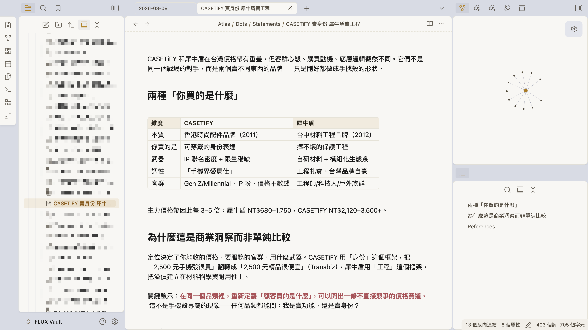
你研究的 —— 現在是 Obsidian 裡 查得回來、互相連結 的卡。
31 / 67
BLOCK 1 · CAPSTONE · 歸檔 → 打開 Obsidian
BLOCK 1 → BLOCK 2你一直在「叫」它
你一直在「叫」一個東西 ——
[研究]、[歸檔]。
[研究]、[歸檔]。
它到底是什麼？ —— 叫做 Skill。
32 / 67
BLOCK 1 → BLOCK 2 · Skill 觀念
BLOCK 2 · Skill 觀念原來是個 Skill
你剛跑的不是「Claude」——
是 knowledge-keeper Skill
是 knowledge-keeper Skill
你以為是 Claude 自己在做。
錯。
是一個叫 knowledge-keeper 的 Skill、在背後工作。
你不打 skill 名字 —— 只要說 [研究] 或 [歸檔]、它自動接手。
.claude/
└── skills/
└── knowledge-keeper/
├── SKILL.md ← 主入口
├── folder-map.md ← Atlas 結構
└── examples/
33 / 67
BLOCK 2 · Skill 觀念 · (a)
BLOCK 2 · Skill 觀念skill 是什麼
Skill = 把你的工作流 ——
「教」給 Claude。
「教」給 Claude。
Claude 本身
通用助手 —— 什麼都會一點、但不知道你公司怎麼做事。
像剛到職的 工讀生 —— 能力不差、
但你們的規矩要一條條教。
但你們的規矩要一條條教。
裝上 Skill
把「你的流程、標準、偏好」教進去 —— 它就照你的方式做。
像待了三年的 老手 ——
你說一句、他知道整套怎麼跑。
你說一句、他知道整套怎麼跑。
幫 Claude 裝一個 skill = 多一個 資深員工。 knowledge-keeper = 你的知識管理員。
34 / 67
BLOCK 2 · Skill 觀念 · 教給 Claude
BLOCK 2 · Skill 觀念為什麼值得
為什麼值得 做成 skill？
省 context · 顧注意力
工作記憶很大（100 萬 token · 約 75 萬字）—— 但每輪對話 + 工具加得很快、會被吃掉。
而且塞越多、Claude 越抓不住重點 —— 品質反而掉。
而且塞越多、Claude 越抓不住重點 —— 品質反而掉。
Skill 用到才載入 —— 省空間、也讓注意力集中在當下。（下頁三層載入）
穩品質
同一件事 —— 今天這樣講、明天那樣講，Claude 做法就不一樣：
多一步、漏一步、格式跑掉。
多一步、漏一步、格式跑掉。
Skill = 標準化 SOP —— 品質不靠心情、不靠記性。
省空間 ＋ 穩品質 —— skill 解決的兩件事。 正式名 Agent Skills · 開放標準（Cursor / Gemini / Codex 都用同一套）
35 / 67
BLOCK 2 · Skill 觀念 · 為什麼值得
BLOCK 2 · Skill 觀念動手看 context
動手 —— 打 /context 看你的空間。
Context usage
claude-opus-4-8[1m]
82.2k / 1.0M tokens（8%）
CATEGORYTOKENSUSAGE
System prompt 系統提示4.0k0.4%
System tools 內建工具15.5k1.6%
Custom agents 你的 agent3.2k0.3%
Memory files 你的 CLAUDE.md / 規則18.1k1.8%
Skills skill 封面4.2k0.4%
Messages 對話 · 越聊越多41.6k4.2%
Free space 還空著913.4k91.3%
CLAUDE.md = Memory files、skill 只佔「封面」—— 開機才用 8%、九成還空著，但 Messages 會一直長。所以 skill 要用才載入。
36 / 67
BLOCK 2 · Skill 觀念 · 動手 /context
BLOCK 2 · Skill 觀念skill 長什麼樣
一個 skill 長什麼樣
FLUX-STANDARD-STUDIO-A/
└── .claude/skills/
└── my-daily-planning/
├── SKILL.md ← 主要指令（必要）
├── scripts/ ← 可執行腳本（選用）
├── references/ ← 參考文件（選用）
└── assets/ ← 模板（選用）
就是一個資料夾 —— 只有 SKILL.md 必要、其餘都選配。
SKILL.md 裡面
① 觸發語
使用者說什麼、它才出來 —— 「[研究]」「[歸檔]」
② 一串指令
出來之後、照這些步驟做
不用記語法 —— 你會「描述流程」，Claude 幫你寫成 SKILL.md。
37 / 67
BLOCK 2 · Skill 觀念 · skill 結構
BLOCK 2 · Skill 觀念SKILL.md 實際長這樣
SKILL.md 裡面 —— 實際長這樣
---
name: daily-planning
description: 每日工作規劃流程。當用戶說
「規劃今天」「daily planning」「開工」時使用。
---
# 每日規劃
## 步驟
1. 確認今天日期和星期幾
2. 讀最近兩份 daily、盤點 carry-over
3. 讀週目標、確認進度 + 剩餘天數
4. 掃各專案進行中任務
5. 建立今天的 daily note
6. 依優先級建議今日工作項目
封面（--- 之間的 YAML）
name + 觸發語 —— Claude 靠這段判斷 要不要啟動。（下頁細講為何關鍵）
本體（下面的 Markdown）
就是你的 SOP —— 一步步寫清楚。
上面 YAML 封面、下面 Markdown SOP —— 就這麼簡單。
38 / 67
BLOCK 2 · Skill 觀念 · SKILL.md 實例
BLOCK 2 · Skill 觀念漸進式揭露
三層載入 —— 怎麼知道
用哪個 skill？
用哪個 skill？
skill 越裝越多 —— 全部載進來會吃光 context + 注意力。所以開機只載「封面」，要用才一層層翻開：
$ claude
● 啟動 agent
● 載入 CLAUDE.md你的規則，開機就全載
● 掃描 skills · tools · MCP只讀名字 + 一句描述
email · calendar … 30+ 個 ＝ 封面（很輕）
> 你：[歸檔] 我剛的研究
● 比對描述 → 命中 [歸檔]
● 載入 [歸檔] 完整指令要用才翻開 ＝ 完整步驟
● 讀它的 scripts / 範本真需要才讀 ＝ 附加
這叫 漸進式揭露 —— 開機只看封面、要用才翻內層，其餘不佔空間。
39 / 67
BLOCK 2 · Skill 觀念 · 三層載入
BLOCK 2 · 開 CLAUDE.md你 vault 裡已經有
你 vault 裡 ——
已經有 skill 了。
已經有 skill 了。
.claude/skills/ — 裝好的 ✓
📁 email收發信、草稿
📁 calendar看 / 排行事曆
📁 knowledge-keeper[研究] / [歸檔]
三個資深員工、隨時待命。
CLAUDE.md 裡 — 還不是 skill
§ 開工你 D1 跑過
§ 收工你 D1 跑過
§ WAM還沒跑過
寫成「流程」、住在 CLAUDE.md 裡。
裝好的 skill ✓ ｜ 跑過的流程（還不是 skill）—— 差別在哪？
40 / 67
BLOCK 2 · 你已經有的 skill
BLOCK 2 · 解構開工拆開來看
「開工」拆開 ——
它早就是 skill 的形狀。
它早就是 skill 的形狀。
CLAUDE.md —— § 開工 這一段
## 開工
> 觸發語：「開工」「規劃今天」「早安」
### 流程
1. 確認日期 + 檢查 git
2. 回顧最近兩份 daily、盤點 carry-over
3. 對週目標、抓今天該做的
4. 建立今天的 daily note + 工作清單
① 觸發語（橙色那行）
你說哪一句 —— 它就出來。
② 流程（下面那串）
就是 skill 的指令 —— 你的 SOP。
有觸發語、有步驟 —— 跟 skill 一模一樣，只差它住在 CLAUDE.md。 B4：把開工 / 收工 / WAM 抽出來、變 真 skill。
41 / 67
BLOCK 2 · 解構開工 → B3
BLOCK 2 → BLOCK 3做 3 個 skill
3 個 routine —— 都在 CLAUDE.md。
今天 全抽成 skill。
今天 全抽成 skill。
開工、收工、WAM —— 同一招、抽 3 個。
42 / 67
BLOCK 2 → BLOCK 3 · 升級 routines
BLOCK 3 · 升級 routines升級開工
升級開工 —— 變 skill、還加料
D1 開工 · 你跑過
只盤點任務
→
升級開工
+ 過夜 未讀信，挑出要回的
+ 盤點任務
（有在用行事曆的，再加今天行程）
+ 盤點任務
（有在用行事曆的，再加今天行程）
同一招抽成 skill —— 一段 prompt 講清楚 4 件事，它才做得穩
① 讀哪段
指明 ## 開工
讓它讀原文、別亂猜
讓它讀原文、別亂猜
② 存哪
.claude/skills/x/
只建一個 SKILL.md
只建一個 SKILL.md
③ 觸發語
放進 description
skill 才會自動跳
skill 才會自動跳
④ 照原樣
body 照步驟寫
不要自己加減
不要自己加減
開工 / 收工 你 D1 跑過、WAM 還沒 —— 三個都用這 4 件事抽，下面三頁各一段 prompt 照貼。
43 / 67
BLOCK 3 · 升級開工 + 穩定 prompt 四要素
BLOCK 3 · 動手 ①daily · 5 MIN
動手 ① —— 把 開工 變 skill + 加料
照貼這段給 Claude（Sonnet）
> 讀我 CLAUDE.md 裡「## 開工」那一整段，幫我做成一個叫「daily」的 skill，就建在這個 vault 裡（不要存到全域）：
· 當我說「開工 / 規劃今天 / 早安」其中任何一句，就自動啟動它
· 步驟照「## 開工」原本寫的做，別漏也別改
· 只多加一步，加在「盤點任務」前面：抓我過去 24 小時的信（已讀未讀都看），挑出要回的
· 建好後，CLAUDE.md 裡「## 開工」原本那一大段就不用留了，幫我換成一句「已經做成 daily skill」，其它地方都別動
做完跟我說：skill 存在哪、CLAUDE.md 改了哪裡。
有在用行事曆的，prompt 再補一句：
「再看我行事曆今天＋明天的行程。」
「再看我行事曆今天＋明天的行程。」
daily
05:00
建置確認：它有回報 ① daily skill 建在哪、② 開工那段換成一句話了 嗎？兩個都有＝這步成了。
先別急著說「開工」測 —— 等三個都建完、開個新的再一起驗（開工有沒有抓信，就是它接上的證據）。
先別急著說「開工」測 —— 等三個都建完、開個新的再一起驗（開工有沒有抓信，就是它接上的證據）。
44 / 67
BLOCK 3 · 動手 ① daily · 5 MIN
BLOCK 3 · 動手 ②eod · 5 MIN
動手 ② —— 把 收工 變 skill
同一招 · 照貼這段（Sonnet）
> 讀我 CLAUDE.md 裡「## 收工」那一整段，幫我做成一個叫「eod」的 skill，就建在這個 vault 裡（不要存到全域）：
· 當我說「收工 / 回顧今天 / 下班了」其中任何一句，就自動啟動它
· 步驟照「## 收工」原本寫的做，別漏也別改
· 建好後，CLAUDE.md 裡「## 收工」原本那一大段就不用留了，幫我換成一句「已經做成 eod skill」，其它地方都別動
做完跟我說：skill 存在哪、CLAUDE.md 改了哪裡。
收工是開工的鏡像、更快 —— 同一個模板換一段。
eod
05:00
建置確認：它有回報 ① eod skill 建在哪、② 收工那段換成一句話了 嗎？兩個都有＝這步成了。
先別急著說「收工」測 —— 要等三個都建完、開個新的再一起驗（現在測到的還是舊的）。
先別急著說「收工」測 —— 要等三個都建完、開個新的再一起驗（現在測到的還是舊的）。
45 / 67
BLOCK 3 · 動手 ② eod · 5 MIN
BLOCK 3 · 動手 ③wam · 5 MIN
動手 ③ —— 把 WAM 變 skill
一樣的模板 · 照貼這段（Sonnet）
> 讀我 CLAUDE.md 裡「## WAM」那一整段，幫我做成一個叫「wam」的 skill，就建在這個 vault 裡（不要存到全域）：
· 當我說「WAM / 週會 / 週末收尾 / 結算本週」其中任何一句，就自動啟動它
· 步驟照「## WAM」原本的 6 個步驟 做，別漏也別改
· 建好後，CLAUDE.md 裡「## WAM」原本那一大段就不用留了，幫我換成一句「已經做成 wam skill」，其它地方都別動
做完跟我說：skill 存在哪、CLAUDE.md 改了哪裡。
你 D1 沒跑過 WAM —— 先讀一遍「## WAM」再讓它做。
wam
05:00
建置確認：它有回報 ① wam skill 建在哪、② WAM 那段換成一句話了 嗎？兩個都有＝這步成了。
先別急著說「WAM」測 —— 等三個都建完、開個新的再一起驗（看它有沒有跑完 6 步）。
先別急著說「WAM」測 —— 等三個都建完、開個新的再一起驗（看它有沒有跑完 6 步）。
46 / 67
BLOCK 3 · 動手 ③ wam · 5 MIN
BLOCK 3 · 收尾你的 skill 團隊
現在 —— 你有 6 個 skill。
FLUX-STANDARD-STUDIO-A/
└── .claude/skills/
├── email/
├── calendar/
├── knowledge-keeper/
├── daily/ ← 今天
├── eod/ ← 今天
└── wam/ ← 今天
本來就有 · 3
email · calendar · knowledge-keeper
＋
今天你做的 · +3
daily · eod · wam
6 個 skill = 6 個資深員工 —— 喊一聲就跑。
47 / 67
BLOCK 3 · 收尾 · 你的 6 個 skill
BLOCK 3 · 收尾開新的 · 驗三個 · 6 MIN
開個新的 —— 讓三個 skill 真的接手。
你剛把「開工 / 收工 / WAM」三段都換成一句話了 —— 每件事現在只剩 一個來源：skill。
先做這件事
開一個新的 Claude Code
（舊的不用關）
（舊的不用關）
06:00
在新的那個 · 各說一次 → 看它自己跑
說「開工」→ 有抓信、挑出要回的
說「收工」→ 有照流程跑
說「WAM」→ 跑完 6 步
三個都動 = 三個 skill 真的接上了。
為什麼要開新的：CLAUDE.md 是 Claude 一開機就讀進去記著的。你中途改了，這次開著的還記得舊版 —— 開個新的，它才讀到新版、skill 才真正接手。
48 / 67
BLOCK 3 · 開新的 · 三個 skill 接手
BLOCK 3 · 動手 ④你自己的 skill · 8 MIN
動手 ④ —— 做一個 你自己的 skill。
不會寫沒關係 · 照貼這段、讓它問你（Sonnet）
> 我常常要做某件事，想把它做成 skill、但我不會寫。
你先 問我幾個問題：要做什麼、給它什麼（輸入）、我要的 產出 + 檔案格式、哪一句話啟動、大概幾個步驟。
問完 先跟我確認有共識、再開始動手。
幫我做成 skill、建在這個 vault 裡（不要存到全域）。
做完跟我說：skill 叫什麼、存在哪、之後怎麼用。
沒想法？挑一個你常做的
· 商品比較對照表
· 新品 / 競品速查
· 客訴・客人問題 回覆草稿
· 拜訪 / 會議筆記整理
你的 skill
08:00
做好後 —— 開個新視窗、喊你的觸發語，它跑起來 ＝ 你第一個只屬於自己的工具。
49 / 67
BLOCK 3 · 動手 ④ · 你自己的 skill · 8 MIN
BLOCK 3 → BLOCK 4中場 · 下課
下課 · 休息一下
10:00
回來接 B4 · Claude Design —— 把那份已經歸檔進 Atlas 的 research，變成整份提案 deck。
50 / 67
中場 · 下課 10 分鐘
BLOCK 3 → BLOCK 4最後一個升級
3 個 skill 做完了 ——
最後 把 research 變整份 deck。
最後 把 research 變整份 deck。
前面歸檔進 Atlas 的那份 research —— 現在輪到它了。
51 / 67
BLOCK 3 → BLOCK 4 · Claude Design
BLOCK 4 · Claude Design一次研究、兩種產出
一份 research ——
兩種產出。
兩種產出。
1 份 research · CASETiFY vs 犀牛盾
↓
產出 ①
變一批 知識卡片
[歸檔] 拆進 Atlas / Dots（前面做過了）
產出 ②
變一份 deck
研究先轉成設計稿、再用 Claude Design 生
① 知識卡片 前面做過了、現在做 ② deck —— 同一份 research，卡片留著長 Atlas（半年後還在）、deck 拿去提案。
52 / 67
BLOCK 4 · Claude Design · 一次研究兩種產出
BLOCK 4 · Claude Design中間要轉一手
research 不能直接丟 ——
中間要先變 設計稿。
中間要先變 設計稿。
research 是「內容」、deck 是「一頁一頁的設計」—— Claude Design 照設計稿做，不會幫你決定簡報長怎樣。
你有的
research.md
一坨內容
→
你要做的
prompt.md · 設計稿
頁數 / 標題 / 視覺 / 風格
→
Claude Design
deck
照稿生成
功夫在 中間那手 —— 設計稿對了、deck 就對。
53 / 67
BLOCK 4 · Claude Design · 為什麼轉一手
BLOCK 4 · 設計稿想的順序
設計稿 —— 先想，最後才排版。
① 目的 + 對象
給誰看？要他做什麼決定 / 行動？—— 先定這個
② 故事線
怎麼鋪陳最有說服力？結論先講 / 問題→方案… 最關鍵、最常被跳過
③ 逐頁排版
照故事線：每頁 標題 + 一個重點 + 該不該配視覺 —— 不擠也不空（頁數從故事線長出來）
④ 設計系統
風格 / 配色 / 字級 —— 一句話寫進 prompt（給你一組 STUDIO A 風：白底 / 品牌藍 / 數字大）
54 / 67
BLOCK 4 · 設計稿 · 想的順序
BLOCK 4 · 講師示範怎麼問 → prompt.md
設計稿（prompt.md）—— 怎麼問、長怎樣。
設計稿 prompt.md（產出）
# CASETiFY 引進評估 · 採購提案
目的：採購主管 → 要不要引進、首批進多少
故事線：機會缺口 → 品牌是誰 → 增量不搶食 → 風險 → 採購建議
設計系統：簡潔商務、數字大 底#FFFFFF 主色#1E73C8
——— 逐頁（照故事線長出）———
P1 封面 · P2 機會缺口：空著的溢價帶
P3 品牌是誰 · P4 增量不搶食（價格帶不重疊）
P5 對零售的意義 · P6 風險三件事
P7 首批配比 40/40/20 · P8 試銷 → 放量
你照貼這段 → 叫它寫出左邊（{ } 自己填）
> 讀 Atlas 那份 CASETiFY 研究報告，幫我寫一份給 Claude Design 用的簡報設計稿、存成 prompt.md。先想清楚再排版，照這順序填：
① 目的 + 對象：{給誰看、要他做什麼決定}
② 故事線：怎麼講最有說服力？（你依 research 判斷）
③ 照故事線想要幾頁：每頁的標題 + 內容重點 + 視覺化方案；不擠也不空
④ 設計系統：簡潔商務、數字放大；
底 #FFFFFF ／ 主色 #1E73C8 ／ 字 #16181D；標題粗黑體、內文黑體
底 #FFFFFF ／ 主色 #1E73C8 ／ 字 #16181D；標題粗黑體、內文黑體
把 ①②③④ 寫成一份完整的 prompt.md 給我看就好，先別生 deck —— 我拿去 Claude Design 生。
關鍵是 先想故事線、別一上來就排版；{ } 是你要填的、設計系統用我們給的這組（照 STUDIO A 官網調的）就好 —— 改設計稿比改 deck 快。
55 / 67
BLOCK 4 · 講師示範 · prompt.md 範例
BLOCK 4 · Claude Design開 claude.ai/design
這就是 Claude Design 的畫面。
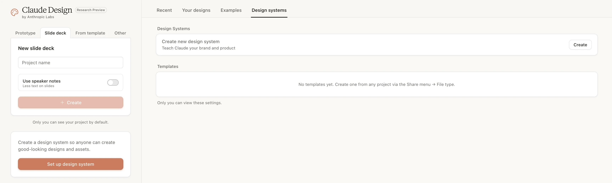
① 開網址
claude.ai/design
② 生 deck
選 Slide deck → 貼 prompt.md → 按 Create
③ 設計系統 · 進階
Design systems 教它你的品牌（= 設計稿 ⑤）
56 / 67
BLOCK 4 · Claude Design · 畫面導覽
BLOCK 4 · Claude Design它生出來長這樣
同一份研究 —— 它生出 9 頁 deck。
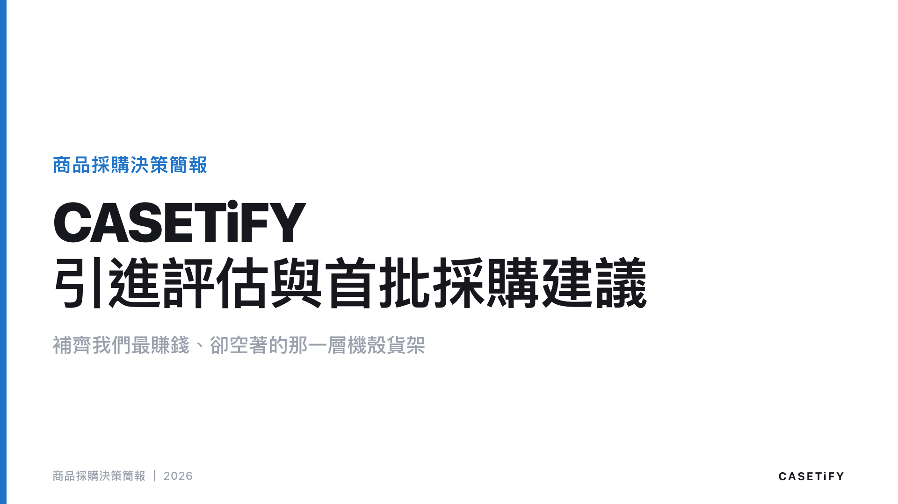
P1 · 封面
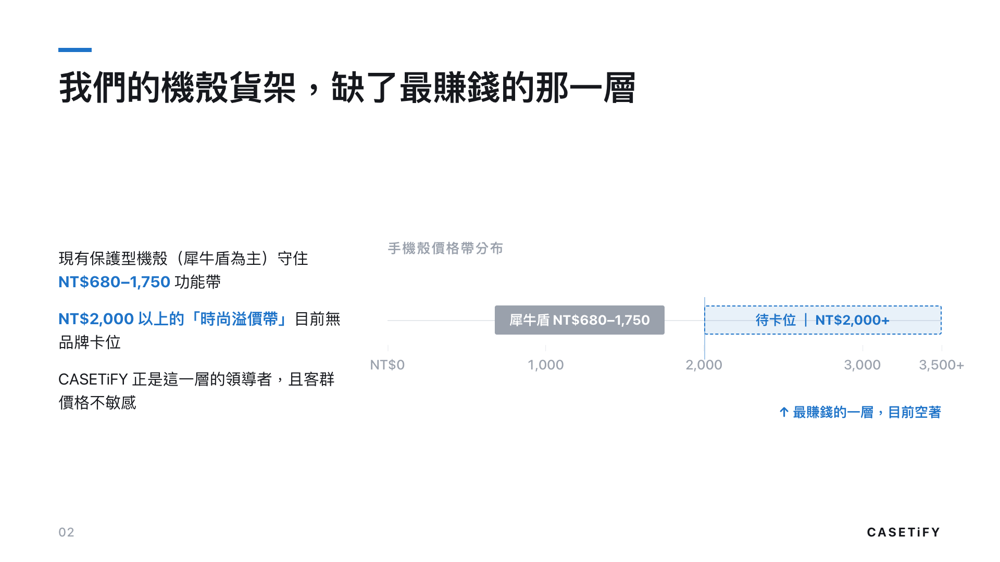
P2 · 機會缺口
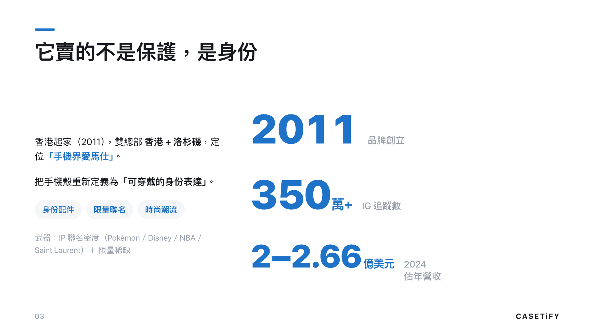
P3 · 品牌是誰
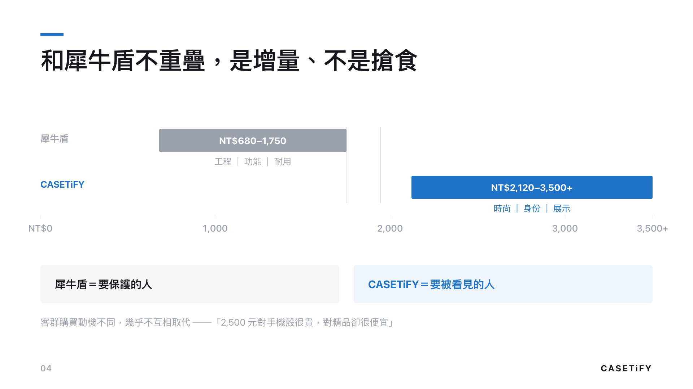
P4 · 增量不搶食
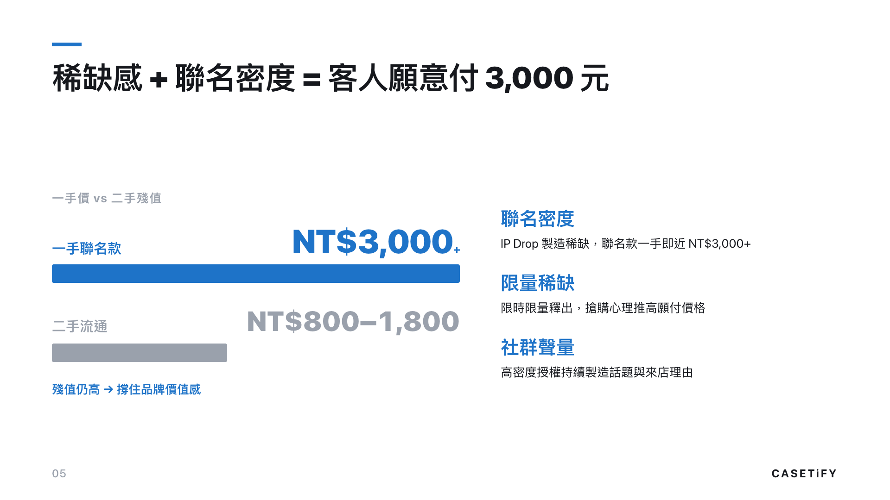
P5 · 溢價來源
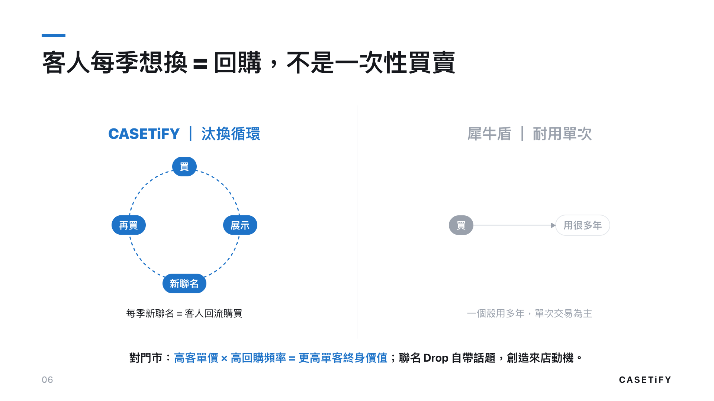
P6 · 對零售意義
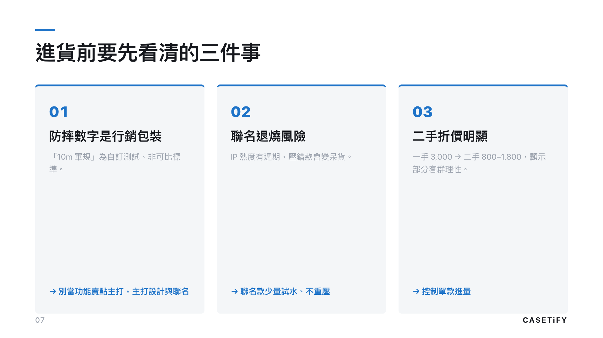
P7 · 風險三件事
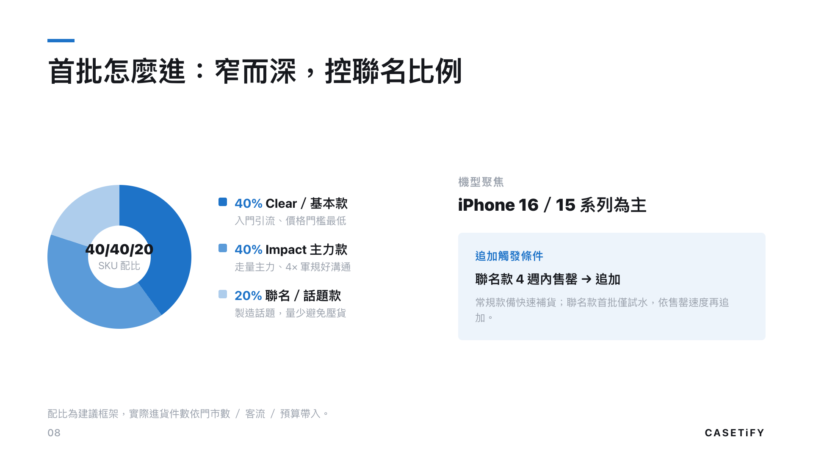
P8 · 採購建議
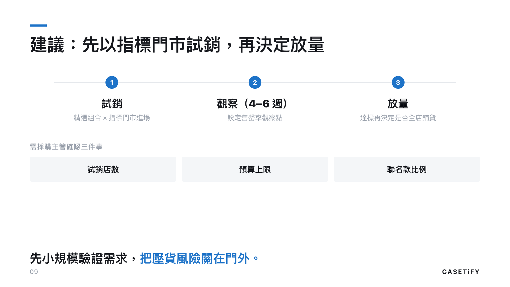
P9 · 試銷→放量
你寫的 prompt.md 餵進去 —— 9 頁、字級配色圖表全照你的設計系統 長出來。
57 / 67
BLOCK 4 · Claude Design · 生出的 deck
BLOCK 4 · 動手換你做 · 20 MIN
換你 —— 用 同一個 prompt，把研究變 deck。
就是剛剛那個 prompt · 檔案用 @ 自己選
> 讀 @你的研究報告，幫我寫一份給 Claude Design 用的簡報設計稿、存成 prompt.md。先想清楚再排版，照這順序填：
① 目的 + 對象：{給誰看、要他做什麼決定}
② 故事線：怎麼講最有說服力？（你依 research 判斷）
③ 照故事線想要幾頁：每頁標題 + 內容重點 + 視覺化方案
④ 設計系統：簡潔商務、數字放大；底 #FFFFFF ／ 主色 #1E73C8 ／ 字 #16181D
把 ①②③④ 寫成完整 prompt.md 給我看，先別生 deck —— 我拿去 Claude Design 生。
開頭的 @ 自己打 → 跳檔案選單、選你那份研究報告（別把字直接貼）。
design
20:00
示範同事 AirPlay、大家同時做。
寫好 prompt.md → 餵 Claude Design → 生 deck → 翻一遍、改一處。
寫好 prompt.md → 餵 Claude Design → 生 deck → 翻一遍、改一處。
58 / 67
BLOCK 4 · 動手 · 換你做 · 20 MIN
BLOCK 4動手後 · 喘口氣
休息一下 · 5 分鐘
05:00
回來收尾 —— deck 抓回來改 + 回看兩種工作流 + 今天三個升級。
59 / 67
BLOCK 4 · 短下課 5 分鐘
BLOCK 4 · Claude Design抓回來改
想再改？把 deck 抓回 Claude Code。
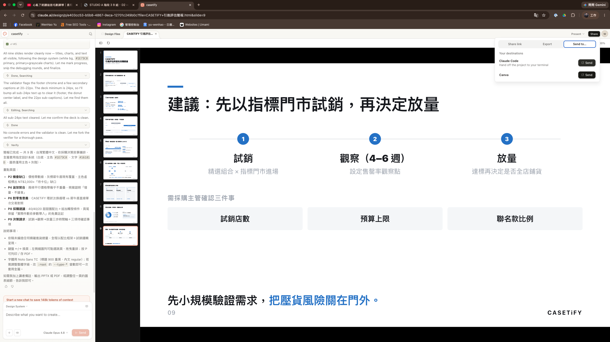
① 在 Claude Design
點右上 Send to → Claude Code
② 貼進 Claude Code
它給你一行指令 → 貼上、enter
③ 用程式精修
整份 deck 變可編輯檔案 → 叫 Claude 微調
60 / 67
BLOCK 4 · Claude Design · 抓回 Claude Code 改
BLOCK 4 · 動手抓回來改 · 10 MIN
換你 —— 把你的 deck 抓回來改一處。
1
在 Claude Design 按 Send to → Claude Code、複製它給的指令
2
貼進 Claude Code、enter → 它把整份 deck 抓成檔案
3
叫它上網抓商品圖加到封面（下面照貼、{ } 換成你的）
> 上網找一張「{你的商品}」的官方產品圖，下載、加到封面（放哪你決定、能在封面顯示就好）。找不到清楚的就換一張。改完跟我說圖放哪、動了哪個檔。
圖醜、要喊它換幾張都正常 —— 看到它真的上網抓圖、放進你的 deck，就成功了。
改一處
10:00
卡住沒關係 —— 看懂「能上網抓圖、放進 deck」就夠。
61 / 67
BLOCK 4 · 動手 · 抓回來改 · 10 MIN
BLOCK 4 · 回看兩種做 slide 的路
你現在會 兩種 做 slide 的路了。
上次 · 報告型
Excel + PowerPoint
原料
手上的數字（銷售排行 / WOI）
你做什麼
把表格丟給 AI、排成週報
產出
30 分鐘第一份週報
今天 · 提案型
Claude Design
原料
一份研究（前面存的那份）
你做什麼
寫設計稿（prompt.md）
產出
整份提案 deck 自動長出
數字要報告、用上次那條；研究要提案、用今天這條。
同一件事，你現在有兩隻手。
同一件事，你現在有兩隻手。
62 / 67
BLOCK 4 · 回看 · 兩種工作流
BLOCK 5 · 收尾今天你升級了什麼
一天 —— 三個升級。
01
你建了一個會長大的知識庫
研究過的進 Atlas、存成永久卡 —— 半年後還調得回來。
02
你做了 4 個 skill
開工 / 收工 / WAM ＋ 一個你自己的 —— 重複動作喊一聲就跑。
03
research 自己長成 deck
查完一個題目 → Claude Design 直接生整份提案。
上次是會用、今天是 變成你的。
63 / 67
BLOCK 5 · 收尾 · 三個升級
BLOCK 5 · 回家作業D3 前完成 · 3 件
回家 3 件 —— 把今天的招練熟。
作業 ① · skill
課堂那個 skill 拿去用 → 再做第二個
今天做的那個拿去工作上真的用、不順就改；再挑一個重複動作做第二個。
估時 · 20 min
作業 ② · 研究
跑 [研究] 一個新題目 → 存進 Inbox
工作上真的想查的那個 —— 比價、政策、市場都行。
估時 · 10 min
作業 ③ · deck
用 Claude Design 把 ② 變一份 deck
研究 → 提案，整條 pipeline 走一遍。
估時 · 20 min
下次見面、抽幾位 講你做的那個 skill —— 三件剛好是今天三個升級各練一次。
64 / 67
BLOCK 5 · 回家作業 · 3 件
BLOCK 5 · 真實收工收工 · 3 MIN
下班前 —— 先跑「收工」收今天。
喊「收工」
→ eod skill 跑今天的回顧
· 今天完成了什麼
· 學到 / 卡住什麼
· 明天從哪接
剛剛驗證過 eod 會跑 —— 現在第一次真的拿來收工。
收工 · eod
03:00
65 / 67
BLOCK 5 · 真實收工 · 收工 eod · 3 MIN
BLOCK 5 · 真實收工WAM · 5 MIN
今天週五 —— 再跑「WAM」收這一週。
WAM = 週會（Weekly Accountability Meeting）。喊一聲，wam skill 跑完整 6 步：
1
結算本週 —— 對 Weekly-Commitment 勾完成、算分數
2
沒完成的 —— 做 / 拆 / 延 / 砍
3
回顧三問 —— 做得好 / 根因 / 下週調整
4
Lock 下週 —— 選 3-5 件主要任務
5
寫進 Weekly-Commitment —— 本週移歷史、建下週
6
commit 收尾 —— 把改動存起來
WAM
05:00
剛剛驗證過 wam 會跑 —— 今天週五、第一次真的拿它收一週。
66 / 67
BLOCK 5 · 真實收工 · WAM · 5 MIN
D2 · 完成下次 D3
今天你把工具 變成自己的。
下次 —— 變成 部門的。
下次 —— 變成 部門的。
D3：兩個 Claude 一起做事、Claude 跑去抓網頁、做一個部門能登入的工具。
67 / 67
D2 完成 · 下次 D3 見